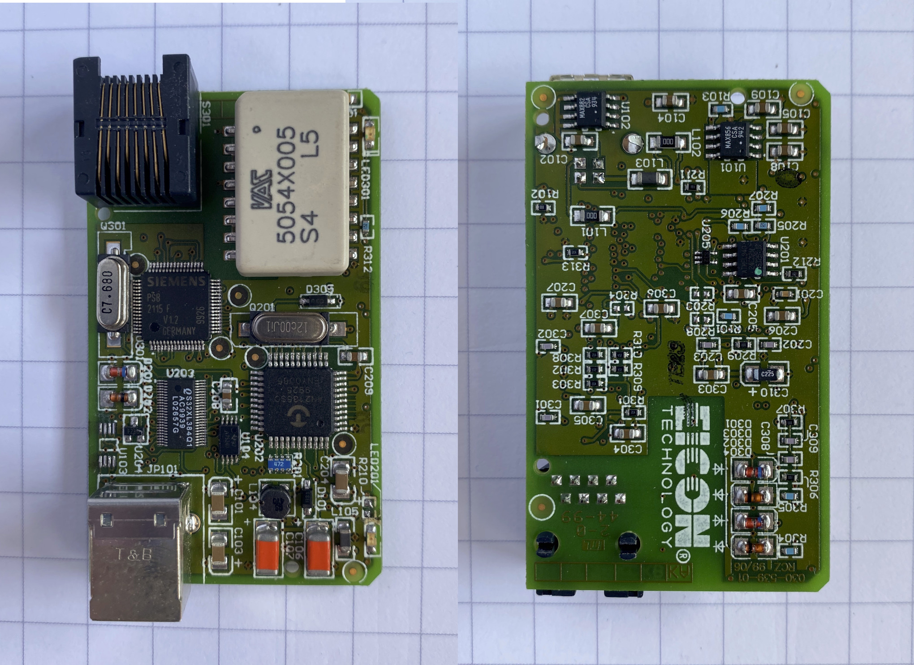
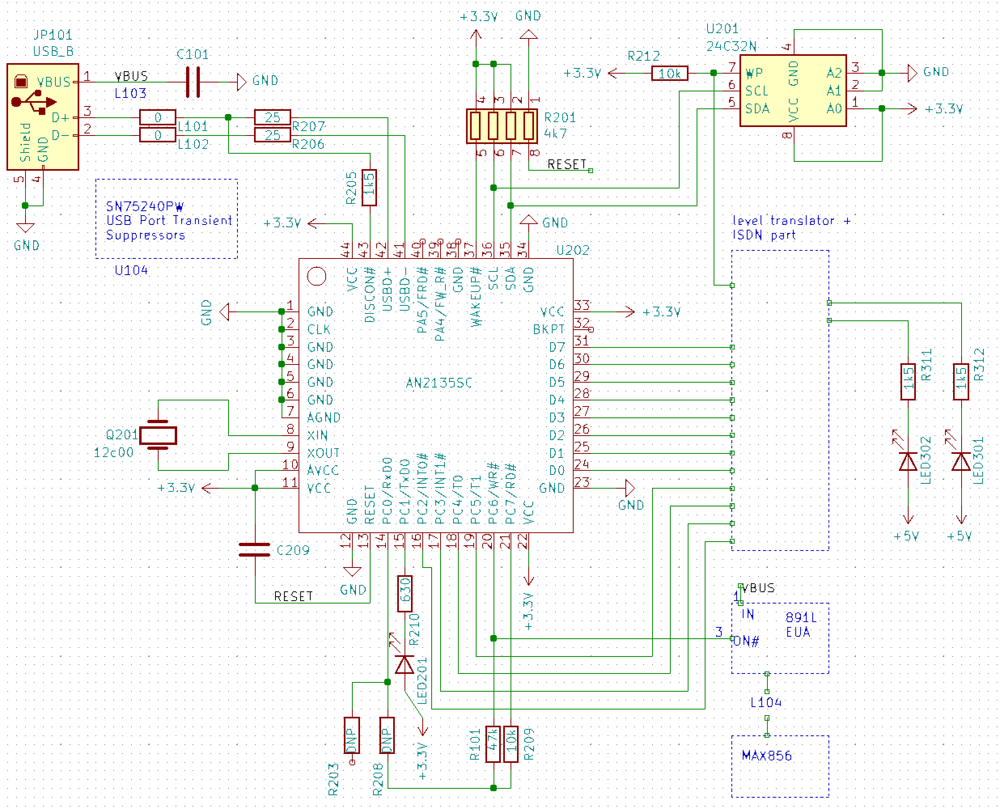
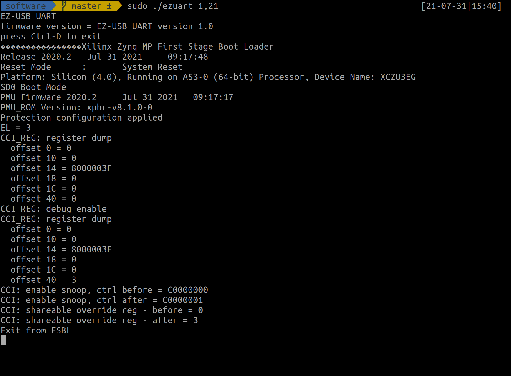
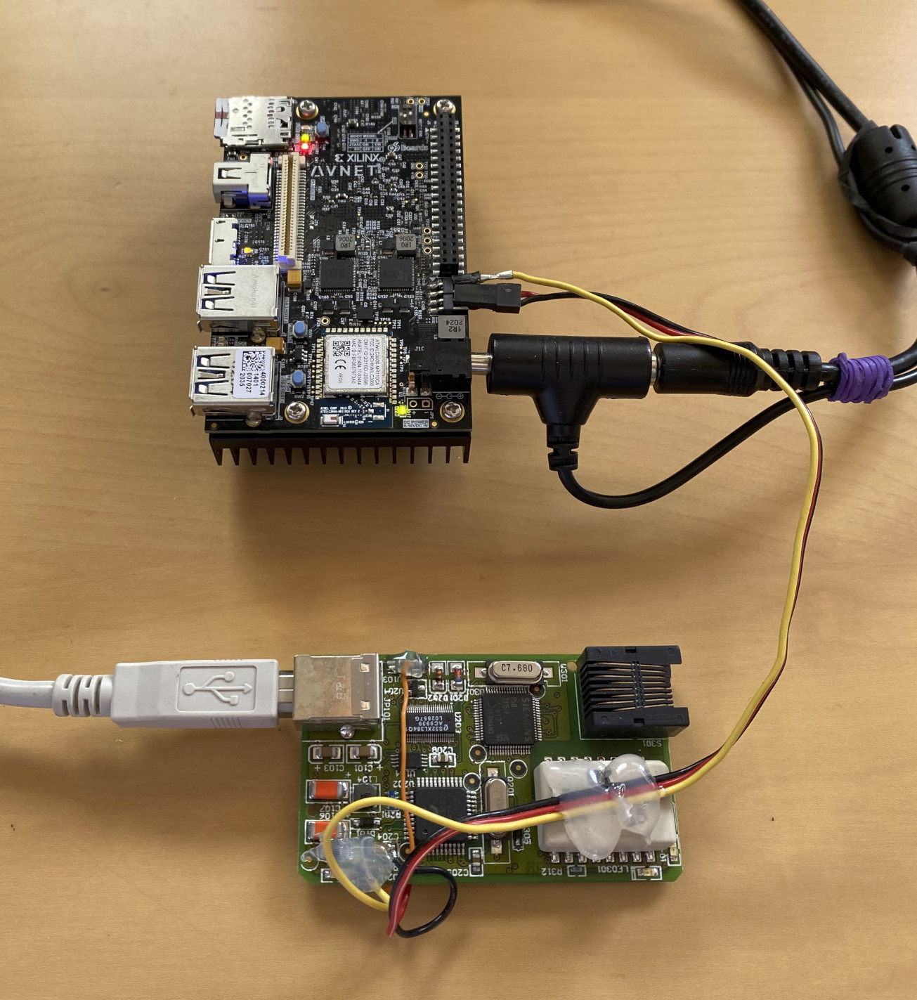

- on Sat 31 July 2021
A short intermezzo from all FPGA-related stuff, this time we deal with an 8051-based USB device. This blog post describes how I converted an ISDN modem (with a USB connection) to a USB-to-UART cable.
During my vacation at my parents' house, I wanted to access the UART on the Ultra96 board to investigate the Linux boot procedure. Surprisingly, I did not manage to find a Raspberry Pi or anything else which can talk UART, but I found a box with old electronics. Among old phones, computer motherboards, GPUs, and other relics of the past I found a PCB with a USB and an RJ45 connector. My sixth sense for electronics made me think that this is a good starting point for a USB-to-UART cable; the device already has a USB, and there will likely be a UART port somewhere.
Note: no half-sane person would go this way to implement a simple USB-to-UART bridge. If talking UART from your computer is your principal objective, just buy a cable, or use a Raspberry Pi.
Initial inspection
USB
The first thing I did is plugging the device into a computer, mainly to verify
that it is still somehow alive. The following was printed out in the dmesg
output:
[11816.274833] usb 1-4.1: new full-speed USB device number 7 using xhci_hcd
[11818.795110] usb 1-4.1: New USB device found, idVendor=071d, idProduct=1000, bcdDevice= 0.3c
[11818.795119] usb 1-4.1: New USB device strings: Mfr=1, Product=2, SerialNumber=3
[11818.795122] usb 1-4.1: Product: Eicon DIVA USB
[11818.795125] usb 1-4.1: Manufacturer: Eicon Technology
[11818.795128] usb 1-4.1: SerialNumber: 0000001000
We see that the USB works, and we also got the product name (Eicon DIVA USB).
A quick search on the internet revealed that this device is an ISDN modem, which
matches the observation, an RJ45 socket and the date code of June 1999.
There is even a web page dedicated to various ISDN cards, where the main characteristics of this device are listed: ISDN Cards Central: Eicon Diva USB
PCB overview

There are several easily-identifiable components on the PCB:
- Cypress Semiconductor AN2135SC "EZ-USB™" = an 8051-based microcontroller with a dedicated USB engine
- Renesas IDTQS32XL384 - 20-bit bus switch and level translator
- Siemens PSB2115 - ISDN PC Adapter Circuit (this is where the ISDN magic happens)
- VAC 5054x005 ISDN transformer
- RJ45 socket
- Atmel AT24C32N 32kbit I2C EEPROM (presumably to store manufacturer ID and maybe the program for the EZ-USB)
- some power-section related ICs
EZ-USB™
The main microcontroller on this board (AN2135SC) was designed specifically to simplify the development of USB-based devices. EZ-USB Technical Reference Manual is from May 2000, while the USB 1.1 standard was released in August 1998. The TRM goes to a great length to explain the advantages of the USB ("Plug and Play") and also serves as an introduction of the protocol itself.
Resources
EZ-USB on Linux
http://www.linux-usb.org/ezusb/
At this writing, all that firmware is statically linked into the appropriate mini-driver.
Linux drivers
https://github.com/torvalds/linux/blob/v5.11/drivers/usb/misc/ezusb.c
https://github.com/torvalds/linux/commit/8d733e26c076f47e7774c0e5baa74c9b1c01199a
fxload
$ apt info fxload
Package: fxload
Version: 0.0.20081013-1ubuntu2
<...>
Description: Firmware download to EZ-USB devices
This program is conveniently able to download firmware into FX and FX2
ez-usb devices. It is intended to be invoked by hotplug scripts when
the unprogrammed device appears on the bus.
Reverse-engineering the board
Since there are no BGA components on this board, and the main microcontroller has only 44 pins, one can easily use a multimeter to reverse engineer the connections between the most important components.
I gathered the obtained knowledge in the schematics below:

Modifications
From the schematics it is clear that one can easily reach the UART port with some small modifications to the board:
- remove U103 MOSFET
- connect LED to PC6 (rotate R210 90deg to disconnect one pad, connect the flying pad on the R210 to the uC)
- connect UART RX cable to PC0 (R208 pad)
- connect UART TX cable to PC1 (R210 pad)
- connect ground cable to GND
Firmware
With hardware in place, it was time to write some firmware for the microcontroller. I managed to find a project on GitHub, titled ezusb-firmware, which can serve as a starting point for custom developments. It is licensed under GPLv2 or later and uses sdcc compiler.
Programming the microcontroller
After modifying the code to match the pinout on the (modified) board, and
compiling the code with sdcc a HEX file is produces. This gets then
easily downloaded to the board with the aforementioned fxload utility:
$ sudo fxload -D /dev/bus/usb/001/008 -s /usr/share/usb/a3load.hex -I firmware.hex -t an21 -v
microcontroller type: an21
1st stage: load 2nd stage loader
open RAM hexfile image /usr/share/usb/a3load.hex
stop CPU
write on-chip, addr 0x0357 len 23 (0x0017)
<...>
write on-chip, addr 0x036e len 12 (0x000c)
... WROTE: 775 bytes, 10 segments, avg 77
reset CPU
open RAM hexfile image firmware.hex
2nd stage: write external memory
write external, addr 0x1b00 len 88 (0x0058)
stop CPU
2nd stage: write on-chip memory
write on-chip, addr 0x0000 len 4 (0x0004)
write on-chip, addr 0x000b len 1 (0x0001)
<...>
write on-chip, addr 0x0862 len 32 (0x0020)
... WROTE: 2378 bytes, 33 segments, avg 72
reset CPU
With the proverbial LED blinking, I was able to confirm that this method of programming the microcontroller works and that the firmware project works correctly.
I have continued the development by adding a UART-related code and later implemented a method to retrieve the UART buffer over the USB and to transmit the data over the UART from the USB. The code can be found in ezusb-uart/firmware.
Software
As the last step, I hacked together an example from the
libusb library and some code to manage the receive and
transmit buffers. Ideally the terminal management (using the termios API)
would be more elaborated, ideally one would also use a dedicated library for
such a task. But since the goal was just to capture some data from the Ultra96,
the current implementation is sufficient.
The code is available in ezusb-uart/software.
Shown in the screenshot below is the output of ezuart utility when connected
to the Ultra96 board:

Summary
Without too much effort, I was able to convert this ISDN modem to a USB-to-UART cable. Several factors contributed to this:
- the microcontroller on this board was specifically designed to facilitate the development of USB devices
- the firmware for this device is downloaded over the USB, allowing easy modifications and development of custom firmware
- the PCB was relatively simple (no BGAs)
- a fantastic firmware project by Martin Schmoelzer and Johann Glaser as a skeleton for my development
There are a couple of limitations, the most jarring one is that this microcontroller does not support 115200 baud operation, making it not really suitable as a general-purpose UART cable.
Nevertheless, I would classify this project as a success - I have managed to convert an old piece of junk to a device, which can provide some insight into the boot procedure of the Zynq on the Ultra96 board.

EZ-USB® is a registered trademark of Cypress Semiconductor Corp. All other trademarks and registered trademarks are the property of their respective owners.